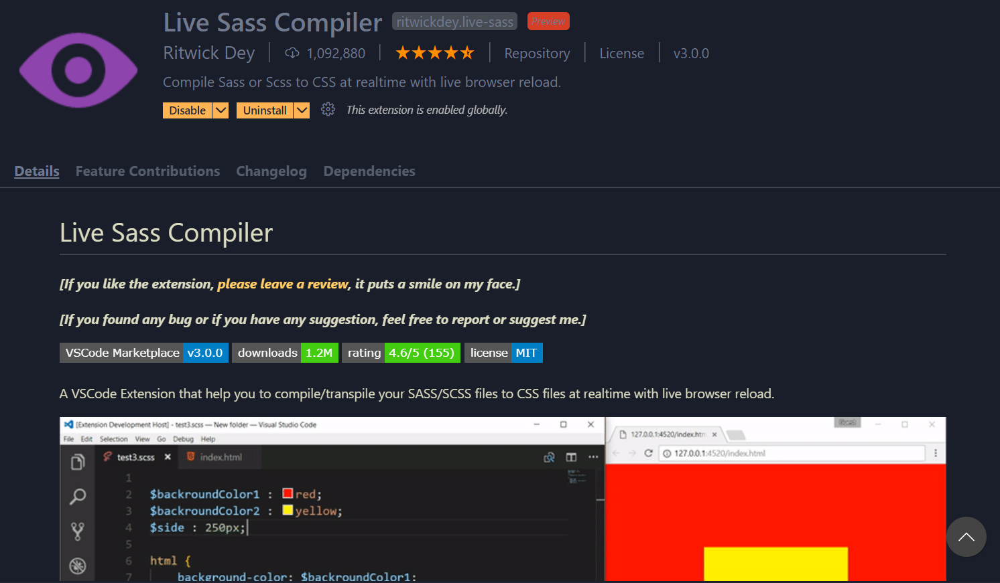
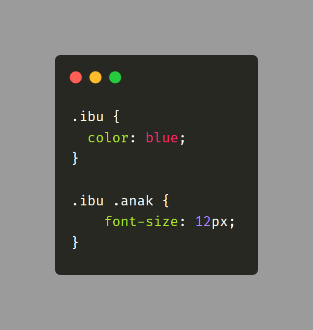
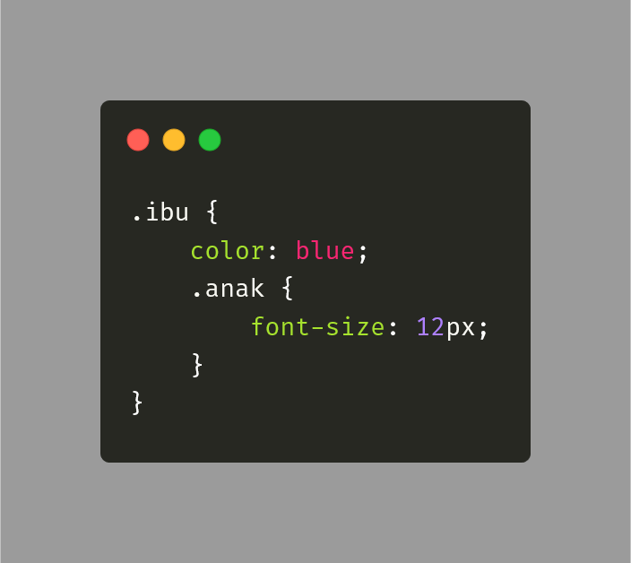
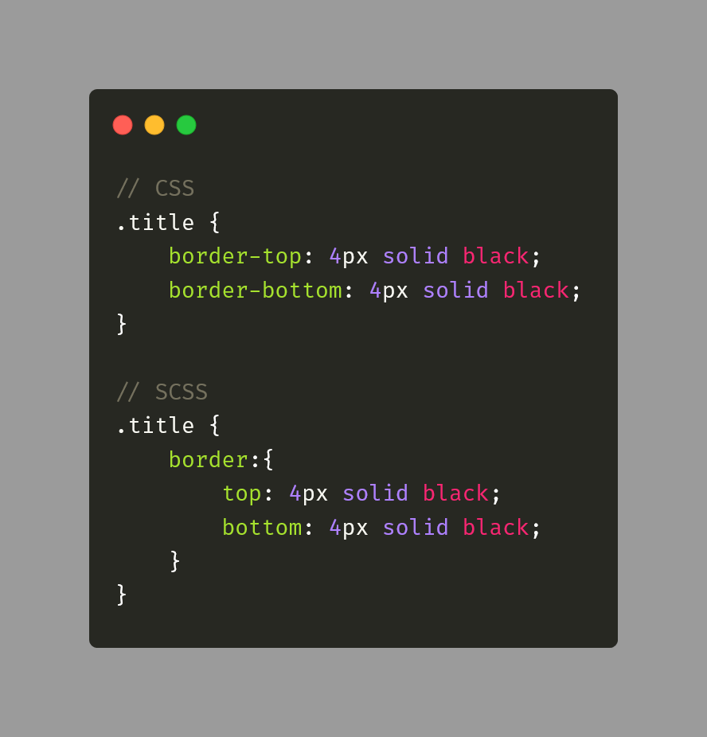
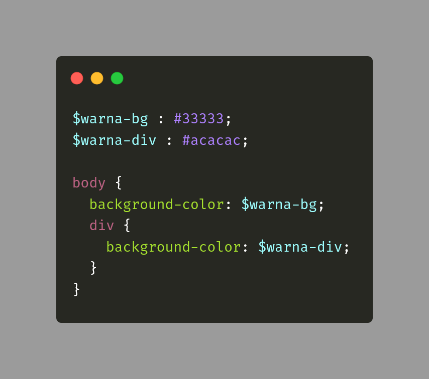
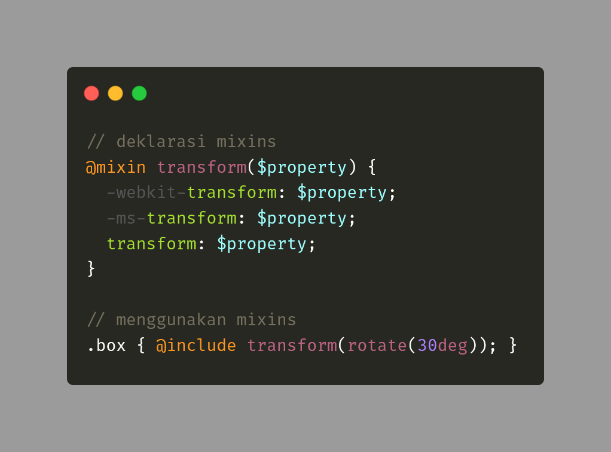

SCSS adalah sebuah bahasa pra-prosesor (preprocessor) untuk CSS. SCSS bukanlah bahasa pemrograman, SCSS adalah bahasa yang akan membuat atau mengcompile ke CSS. SCSS memiliki fitur yang tidak dimiliki CSS seperti Variabel, Nesting, mixins, inheritance, dll. Fitur2 ini akan sangat membantu projek2 besar agar style sheetnya lebih rapih dan terorganisir.
Gampangnya file SCSS akan dicompile menjadi CSS. Jadi jika kalian bekerja dengan SCSS kalian sudah tidak perlu lagi melihat file CSS kalian. Kalian hanya perlu fokus dengan file SCSSnya. Penulisannya pun mirip2 dengan CSS.
Jika kalian menggunakan VSCode kalian bisa menggunakan extension yang namanya Live SASS Compiler, extension otomatis akan mengcompile file SCSS kita ketika di save.
Yang pada awalnya pada CSS kita menulis seperti ini :
Kita bisa menulisnya seperti ini pada SCSS:
Fitur Nesting (Bersarang) pada SCSS ini menjadikan penulisan style sheet kita menjadi lebih mudah dibaca dan diperbaiki. Selain selektor, properti juga bisa di nesting di SCSS ini, contohnya sebagai berikut :
Dengan SCSS kalian bisa menggunakan variabel layaknya bahasa pemrograman, contohnya sebagai berikut :

Pada SCSS kita bisa melakukan inheritance / pewarisan dengan keyword
@extend yang contohnya sebagai berikut :
Mixin mirip seperti function pada bahasa pemrograman. Mixin
memungkinkan kita menggunakan ulang beberapa grup deklarasi CSS.
Pembuatan mixin dapat dilakukan dengan direktif @mixin,
lalu untuk memakainya / memanggilnya kita menggunakan direktif
@include
Contohnya sebagai berikut:
Kalian bisa mempelajari lebih dalam tentang SCSS, kalian bisa mempelajari tentang operator pada SCSS, At-Rules, Flow Control, Built-in modules, dll. Semua ini tersedia lengkap di dokumentasi berikut https://sass-lang.com/documentation